Poisson Nernst-Planck Equation¶
This section describes how to make a weak form presentation of Poisson and Nernst-Planck equation system. The Nernst-Planck equation is often used to describe the diffusion, convection, and migration of charged particles:
(1)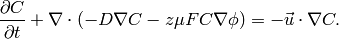
The second term on the left side is diffusion and the third term is
the migration that is directly related to the the local voltage
(often externally applied)  . The term on the right side is
convection. This is not considered in the current example. The variable
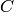 is the concentration of the particles at any point of a domain
and this is the unknown of the equation.
. The term on the right side is
convection. This is not considered in the current example. The variable
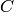 is the concentration of the particles at any point of a domain
and this is the unknown of the equation.
One application for the equation is to calculate charge configuration
in ionic polymer transducers. Ionic polymer-metal composite is
for instance an electromechanical actuator which is basically a thin
polymer sheet that is coated with precious metal electrodes on both
sides. The polymer contains fixed anions and mobile cations such
as  ,
,  along with some kind of solvent, most often water.
along with some kind of solvent, most often water.
When an voltage  is applied to the electrodes, the mobile cations
start to migrate whereas immobile anions remain attached to the polymer
backbone. This creates spatial charges, especially near the electrodes.
One way to describe this system is to solve Nernst-Planck equation
for mobile cations and use Poisson equation to describe the electric
field formation inside the polymer. The poisson equation is
is applied to the electrodes, the mobile cations
start to migrate whereas immobile anions remain attached to the polymer
backbone. This creates spatial charges, especially near the electrodes.
One way to describe this system is to solve Nernst-Planck equation
for mobile cations and use Poisson equation to describe the electric
field formation inside the polymer. The poisson equation is
(2)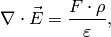
where  could be written as 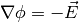 and
could be written as 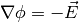 and  is
charge density,
is
charge density,  is the Faraday constant and 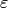 is dielectric
permittivity. The term could be written as:
is the Faraday constant and 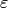 is dielectric
permittivity. The term could be written as:
(3)
where 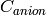 is a constant and equals anion concentration. Apparently for IPMC, the initial spatial concentration of anions and cations are equal. The inital configuration is shown:

The purploe dots are mobile cations. When a voltage is applied, the anions drift:

This eventually results in actuation (mostly bending) of the material (not considered in this section).
To solve equations (1) and (2) boundary conditions must be specified as well. When solving in 2D, just a cross section is considered. The boundaries are shown in:

For Nernst-Planck equation (1), all the boundaries have the same, insulation boundary conditions:
(4)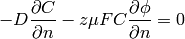
For Poisson equation:
- (positive voltage): 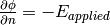. We cannot apply just Dirichlet boundary, i.e. 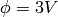 as then (1) would not converge in time. It means that the charge accumulation near the boundary would increase continually.
- (ground): Dirichlet boundary 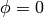.
- (insulation): Neumann boundary 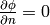.
Weak Form of the Equations¶
To implement the (1) and (2) in Hermes2D, the weak form must be derived. First of all let’s denote:
- 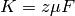
- 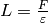
So equations (1) and (2) can be written:
(5)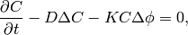
(6)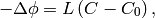
Then the boundary condition (4) becomes
(7)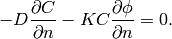
Weak form of equation (5) is:
(8)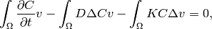
where  is a test function. When adding the boundary condition (7):
is a test function. When adding the boundary condition (7):
(9)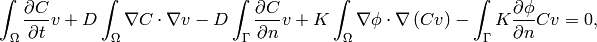
where the terms 3 and 5 became  due to the boundary condition.
By expanding the nonlinear 4th term, the final weak form is:
due to the boundary condition.
By expanding the nonlinear 4th term, the final weak form is:
(10)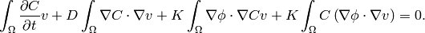
The weak form of equation (6) with test function  is:
is:
(11)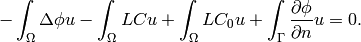
After expanding the Laplace’ terms, the equation becomes:
(12)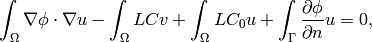
where the last term could be written 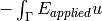.
Jacobian matrix¶
Equation (10) is time dependent, thus some time stepping method must be chosen. For simplicity we start with first order Euler implicit method
(13)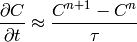
where 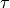 is the time step. We will use the following notation:
(14)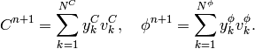
In the new notation, time-discretized equation (10) becomes:
(15)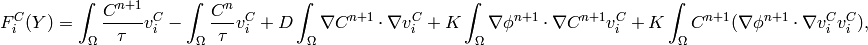
and equation (12) becomes:
(16)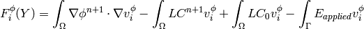
The Jacobian matrix 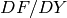 has 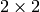 block structure, with blocks corresponding to
(17)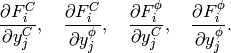
Taking the derivatives of 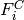 with respect to 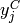 and 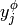, we get
(18)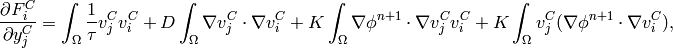
(19)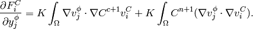
Taking the derivatives of 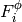 with respect to and , we get
(20)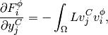
(21)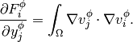
In Hermes, equations (15) and (16) are used to define the residuum , and
equations (18) - (21) to define the Jacobian matrix 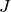.
Simulation¶
To begin with simulations in Hermes2D, the equations (15) - (21) must be implemented. It is done by implementing the callback functions found in newton-np-timedep-adapt-system/forms.cpp.
The functions along with the boundary conditions:
// Poisson takes Dirichlet and Neumann boundaries
int phi_bc_types(int marker) {
return (marker == SIDE_MARKER || marker == TOP_MARKER)
? BC_NATURAL : BC_ESSENTIAL;
}
//Nernst-Planck takes Neumann boundaries
int C_bc_types(int marker) {
return BC_NATURAL;
}
//Dirichlet boundary conditions for Poisson equation
scalar phi_bc_values(int marker, double x, double y) {
return 0.0;
}
//Neumann boundary of Poisson equation as linear sufrace integral
Scalar linear_form_surf_top(int n, double *wt, Func<Real> *v, Geom<Real> *e, ExtData<Scalar> *ext) {
return -E_FIELD * int_v<Real, Scalar>(n, wt, v);
}
are assembled as follows:
WeakForm wf(2);
Solution Cp, Ci, phip, phii;
wf.add_biform(0, 0, callback(J_euler_DFcDYc), UNSYM, ANY, 1, &phii);
wf.add_biform(1, 1, callback(J_euler_DFphiDYphi), UNSYM);
wf.add_biform(0, 1, callback(J_euler_DFcDYphi), UNSYM, ANY, 1, &Ci);
wf.add_biform(1, 0, callback(J_euler_DFphiDYc), UNSYM);
wf.add_liform(0, callback(Fc_euler), ANY, 3, &Cp, &Ci, &phii);
wf.add_liform(1, callback(Fphi_euler), ANY, 2, &Ci, &phii);
wf.add_liform_surf(1, callback(linear_form_surf_top), TOP_MARKER);
where the variables Cp, Ci, phip, and phii are solutions concentration
and voltage . The suffixes i and p are current iteration and previous
iteration respectively.
When it comes to meshing, it should be considered that the gradient of near the boundaries will
be higher than gradients of . This allows us to create different meshes for those variables. In
main.cpp.
the following code in the main() function is for having multimeshing:
H1Space C(&Cmesh, &shapeset);
H1Space phi(MULTIMESH ? &phimesh : &Cmesh, &shapeset);
When MULTIMESH is defined in header.h. then different H1Spaces for phi and C are created. It must be noted that when adaptivity is not used, the multimeshing in this example does not have any advantage, however, when adaptivity is turned on, then mesh for H1Space C is refined much more than for phi.